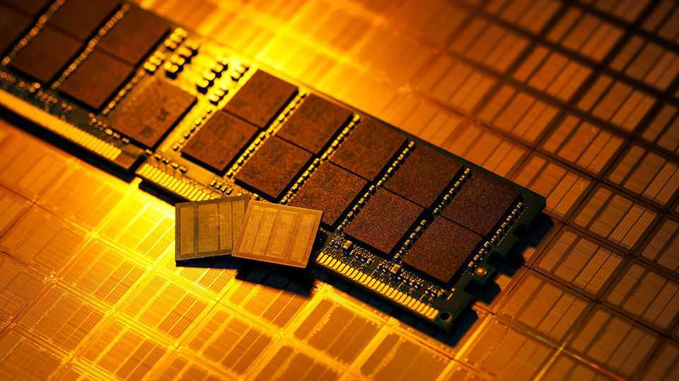
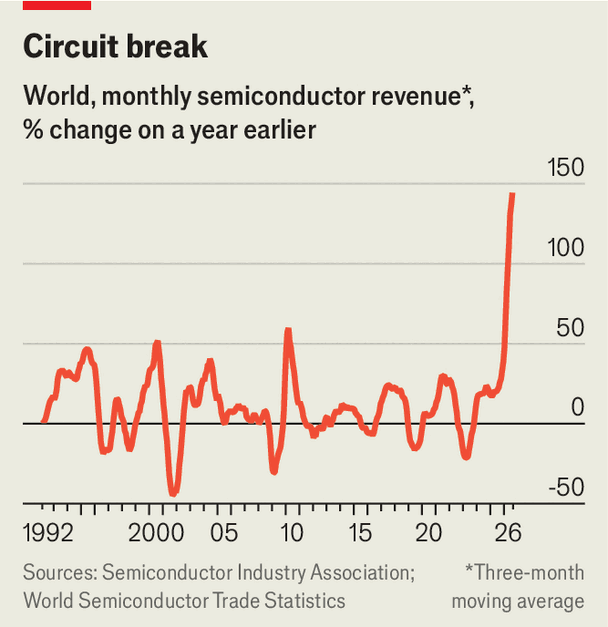

Is the semiconductor industry headed for an almighty crash?
There are reasons to believe a bust, if it comes, will be less vertiginous than the boom

Oct 15th 2026
For more than four decades the semiconductor industry has been governed by two laws as dependable as any in physics. The first is that the number of transistors, the tiny switches etched onto a chip, keeps rising. The second is that every boom ends in a bust. The first, which makes chips more powerful, is in rude health. Leading processors for artificial intelligence contain more than 200bn transistors, and the industry reckons it can cram in a trillion by the end of the decade. The second is stirring unease about how long the good times will last.
The industry is used to booms, but not one like this. AI has created an insatiable appetite for the chips used to train and run AI models. In the first half of 2026 semiconductor sales grew faster, year on year, than at any time since the 1980s (see chart). This month TSMC, the world’s biggest contract chipmaker, reported its sixth consecutive quarter of record profits; Samsung Electronics, a South Korean chip heavyweight, reported its fourth. Yet investors are growing jittery. Despite blowout results and rosy forecasts, an index of leading semiconductor firms has fallen by over 10% since October 6th. Their fears were not helped when on October 12th Hock Tan, boss of Broadcom, a big chip designer, likened many investors in the AI trade to gamblers in a casino who “have no clue” what they are investing in.

Nearly all of the industry’s expected growth hinges on chips for AI, making it a giant bet on the technology. If that bet sours—and the “supercycle”, as some have taken to calling it, comes to an end—will chipmakers suffer a bust as vertiginous as the boom? There are reasons to think not.
Even as the semiconductor industry has grown, manufacturing has become far more concentrated. Most chip designers, such as Nvidia, whose graphics-processing units have powered the AI boom, do not make their own silicon. Nor do software firms such as Google and OpenAI, which have also taken to designing AI processors. Instead they rely on foundries—and one in particular. In the early 2000s some 25 firms could make the most advanced processors. Today four can, and TSMC makes nearly all of the high-end ones.
Memory chips, which are also vital for AI, have gone the same way. More than 20 firms made advanced memory chips in 1990. Now only three—Samsung, SK Hynix and Micron—make almost all of them. China has produced new entrants in both processors and memory chips, but without access to the most advanced chipmaking tools, they remain behind the frontier.
Consolidation has allowed a few dominant chipmakers to set the pace of expansion and dictate the terms on which they sell. They are investing heavily to capitalise on the boom. TSMC’s capital expenditure is expected to hit roughly $62bn this year, more than one and a half times as much as in 2025. Next year analysts expect it to be around $76bn. The memory-makers have also boosted their investments.
Even so, their outlays are modest in comparison with the windfall from AI. As a share of revenue, TSMC’s capital spending is expected to fall from 44% in 2023 to 36% this year. Moreover, investments are being paid for from the cash that chipmakers are generating, rather than borrowing. This year TSMC’s capacity expansions will use up a little more than half of its operating cashflow, and Samsung’s barely a fifth. The debts of these chipmakers look modest next to their swelling cash piles.
Manufacturers are enjoying a “very good pricing environment”, according to Bill Wiseman of McKinsey, a consultancy, and have every reason to pace their expansion to preserve it. DRAM, a type of memory used in nearly all electronics, costs about six times what it did in early 2023. TSMC has not cut the price of its three-nanometre manufacturing process, which it launched in late 2022, even though a process normally gets cheaper after a couple of years. The speed of capacity expansion has also been impeded by the fact that many new chipmaking facilities are being built in America, where construction takes “about twice as long”, according to Mr Wiseman.
Consolidation has also given chipmakers more bargaining power, shifting who will bear the burden of any slowdown. Until recently, memory was sold mostly on the spot market or through short-term contracts. When demand slackened, customers were not obliged to keep buying and prices therefore collapsed. Now, with capacity scarce and only a few suppliers to choose from, buyers are signing up years in advance, and on the sellers’ terms. Nvidia has committed more than $250bn to securing supply and components until January 2029. In September Micron said that “take-or-pay” agreements, under which customers must buy the agreed volumes or pay anyway, had locked in 35% of its revenue through to 2030, with $32bn-worth of commitments, most of which involve cash deposits. Such prepayments help fund new factories. They also shift at least part of the risk of a bust onto buyers.
An end to the AI boom would still bring chipmakers plenty of pain. If spending stalls, prices will drop, profits will shrink and stratospheric stock prices will come back down to earth. Customers will look to renegotiate contracts that were signed at the top of the market. The second law of the semiconductor industry still applies. This time, however, customers will share the hangover. ■